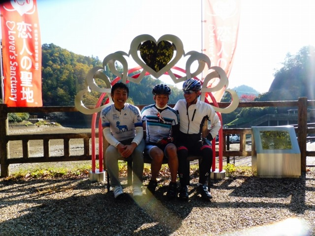
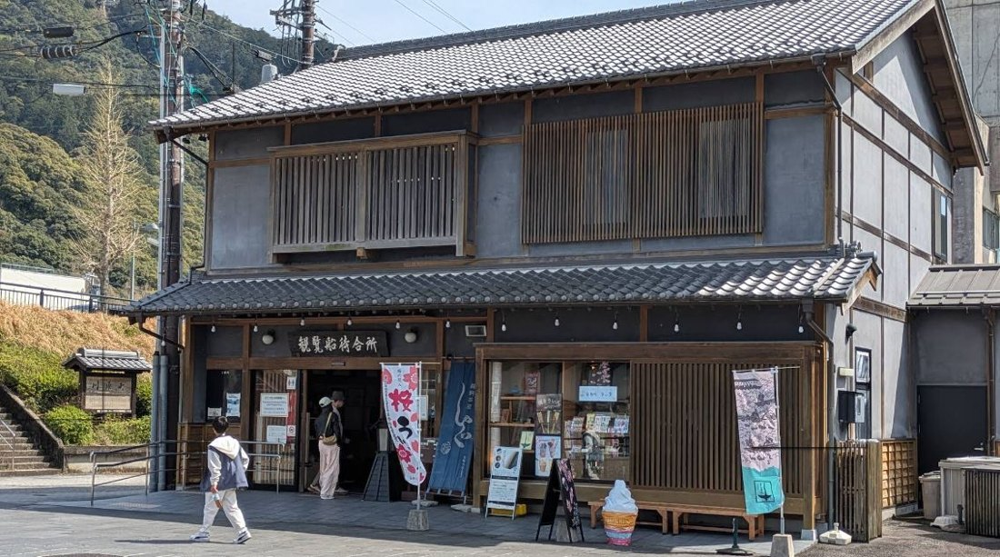

岐阜市から山県市､各務原方面のお店です｡メンバーがよく通うプロショップや､ほっとひと息つけるカフェがあります｡
伊自良湖､恋人の聖地のカフェ｡ピンクのメニューと元祖ハヤシライス

山県市の伊自良湖にあるカフェです｡伊自良湖は､恋人の聖地に認定されている､景色のよい人工湖です｡
名物は､ピンク色の坦々麺と､元祖ハヤシライスです｡聖地にちなんだ､見た目もかわいいメニューがそろいます｡
湖をぐるりと囲む桜並木や､ハート型のベンチで記念撮影もできます｡関から行きやすい､家族やサイクリング仲間とのお出かけにぴったりの場所です｡
岐阜城のふもと｡鵜飼乗り場の発着場にある､ライド帰りのデザートショップ

岐阜城下の河原町にある､長良川鵜飼乗り場の発着場のデザートショップです｡岐阜エリアのメンバーがよく集合する､ライドの定番スポットのすぐそばにあります｡
おすすめは､ういろうが入った｢和氷｣という､めずらしいかき氷｡ブログ筆者も､池田山ライドの帰りに立ち寄って､｢和菓子は脂肪分が少ないので､サイクリストに最適｣と大満足でした(2024年10月)｡
信頼できる相談相手｡レーシングチーム｢O-RACING｣の母体になっているスポーツバイクのお店
各務原にあるスポーツバイクのお店です｡ブログ筆者が､毎年のオーバーホール(車検)を任せている､とても信頼できるお店のひとつです｡
ガチ派のロードバイクからシティサイクルまで幅広く取りそろえていて､愛車やヘルメットを購入したメンバーもいます｡変速機(ディレイラー)の調整のコツを教えていただいたり､お店のチームの練習会｢オギ練｣に参加したりと､走る仲間が自然に集まってくるお店です｡
せきサイメンバーも多く通う､岐阜最大級のサイクルショップ
サイクルSHOPエルモは､新しいお店ですが､岐阜最大級のショップです｡取り扱いメーカーも大きく､週末に谷汲方面へ向かう｢エルモ練｣が有名です｡
レーサーならではの視点とともに､グルメ情報もたっぷりのブログが人気で､事務局でもよく見ています｡
※紹介は､トマト工業ブログ(2016年〜2026年)の記事をもとにしています｡営業時間や定休日は変わることがあるので､お出かけの前にご確認ください｡